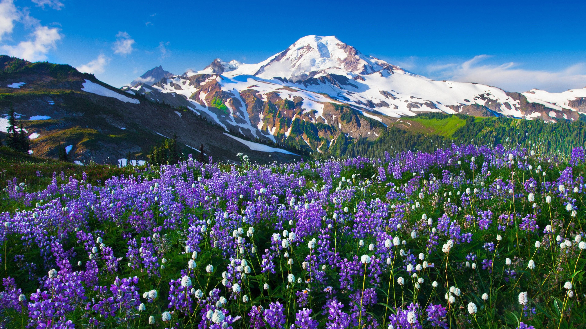

Spring and "springtime" refer to the season, and also to ideas of rebirth, rejuvenation, renewal, resurrection and regrowth. Subtropical and tropical areas have climates better described in terms of other seasons, e.g. dry or wet, monsoonal or cyclonic. Cultures may have local names for seasons which have little equivalence to the terms originating in Europe.
Spring is one of the four temperate seasons, succeeding winter and preceding summer. There are various technical definitions of spring, but local usage of the term varies according to local climate, cultures and customs. When it is spring in the Northern Hemisphere, it is autumn in the Southern Hemisphere and vice versa.